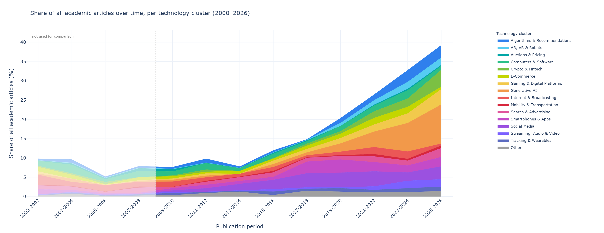
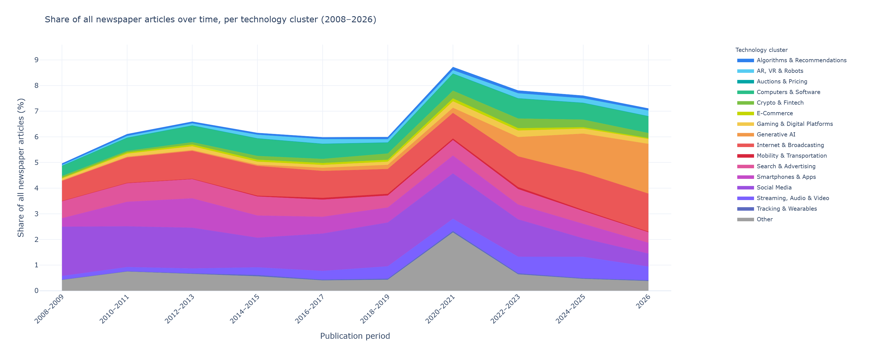

| Technology Cluster | Academic Share | Media Share | Gap (pp) | $r$ at Lag 0 | Best Lag ($r$) |
|---|---|---|---|---|---|
| Generative AI | 10.3% | 5.5% | +4.8 | 0.87 | +4 (0.91)* |
| Algorithms & Recommendations | 6.0% | 1.3% | +4.7 | 0.02 | +3 (0.59) |
| E-Commerce | 5.6% | 1.0% | +4.6 | 0.05 | -3 (0.35) |
| Tracking & Wearables | 4.0% | 0.5% | +3.6 | 0.29 | -5 (0.47) |
| Gaming & Digital Platforms | 5.8% | 2.3% | +3.5 | 0.29 | +4 (0.59) |
| Auctions & Pricing | 1.7% | 0.0% | +1.7 | -0.04 | +4 (0.36) |
| Crypto & Fintech | 4.2% | 2.8% | +1.4 | 0.26 | +3 (0.73) |
| Mobility & Transportation | 1.9% | 0.6% | +1.3 | -0.21 | -3 (0.20) |
| AR, VR & Robots | 2.8% | 1.9% | +0.8 | 0.12 | +4 (0.73)* |
| Computers & Software | 8.7% | 8.9% | -0.2 | 0.04 | -2 (0.38) |
| Smartphones & Apps | 9.7% | 10.5% | -0.8 | 0.11 | +5 (0.56) |
| Search & Advertising | 8.2% | 9.7% | -1.5 | 0.60 | 0 (0.60) |
| Streaming, Audio & Video | 3.2% | 5.9% | -2.7 | 0.29 | +1 (0.36) |
| Other | 6.7% | 10.1% | -3.4 | -0.03 | -1 (0.15) |
| Social Media | 13.5% | 22.4% | -8.8 | 0.01 | +4 (0.22) |
| Internet & Broadcasting | 7.7% | 16.6% | -8.9 | -0.08 | +5 (0.33) |
Abstract
Marketing has repeatedly reorganized its research agenda around emerging consumer technologies, and artificial intelligence (AI) is widely described as a break in that sequence rather than its latest instance. Evaluating this claim requires a baseline against which the response to AI can be placed. We construct one by screening all \(10,196\) articles published in seven leading marketing and consumer-behavior journals between 2000 and June 2026, resolving \(1,583\) technology mentions from \(1,102\) empirical articles into \(901\) canonical technologies grouped into 16 semantic clusters, and benchmarking academic attention against U.S. national news coverage of the same technologies. AI reproduces the field’s established pattern of novelty tracking at unprecedented rate and scale, but it is the only technology domain for which the temporal gap between public and academic attention is absent: the two rise concurrently rather than in sequence. We attribute this to the simultaneity of consumer and researcher adoption and to AI’s dual status as instrument and object of research, and derive implications for cumulative theorizing on consumer technology.
Keywords: artificial intelligence, consumer technology, research agenda, attention allocation, bibliometric mapping
Introduction
Consumer technologies have repeatedly reorganized the research agenda in marketing and consumer research, both in general [1] and for specific technologies as they became substantive parts of consumers’ experience [2,3]. AI is now widely described as a break in this sequence, disrupting nearly every aspect of consumers’ experience [4,5] as well as the research process itself [e.g., 6,7].
Academic attention is finite. Every technology that becomes a research object does so at the expense of others, so the distribution of attention across consumer technologies is a substantive outcome rather than a neutral by-product of individual interests. Because consumer technologies reach large populations quickly and are contested publicly before they are examined empirically, the evidence available at the moment of contestation is largely the evidence the field has chosen to produce [8,9]. Both considerations bind more tightly for AI than for any technology preceding it: it is general-purpose rather than confined to a single consumption context, so it can be attached to almost any existing research question and what it displaces is a share of everything else the field might study; and it became publicly contested within months rather than years of release, compressing the window in which evidence can be produced before positions harden.
Existing reviews of consumer technology are organized around individual technologies or bounded domains [2,3], so the response to AI cannot easily be placed against the response to the technologies that preceded it. We therefore ask in which respects the field’s response to AI departs from its response to the other consumer-technology domains it has studied since 2000, and how the academic allocation of attention to AI compares with the visibility AI attained in public discourse.
We propose three mechanisms governing how the field allocates attention across consumer technologies. Novelty tracking describes the focus on emerging technologies, which attract attention at the expense of existing ones. Technology normalization describes the inverse: technologies do not lose relevance when they cease to be new, but they become harder to see as research objects, so the gap between academic and public attention widens as they are absorbed into ordinary consumption. Because consumer AI has only been on the market since late 2022 [10], we cannot assess this directly for AI and instead draw inferences from earlier waves. Finally, the temporal gap between media and academic attention indicates how diffusion corresponds to academic attention; prominence in news coverage is an established proxy for prominence in public awareness [11–13]. Diffusion has been suggested to precede academic discourse [14], with academic attention lagging because studying a technology requires consumer data and hence adoption saturation, and because review times in high-quality outlets are long [15,16]. AI is the first consumer technology for which this interval has a reason to collapse: consumers and researchers adopted generative AI simultaneously and through the same public interfaces, no firm partnership is required to study it, and the technology lowers the cost of producing research about itself.
Each mechanism is comparative and cannot be assessed from a literature examining a single technology. Assessing them requires a corpus in which every consumer technology the field has studied is represented, identified without a predefined vocabulary of what counts as relevant, and expressed on a common scale that permits AI to be placed alongside its predecessors.
Method
We screened all \(10,196\) articles published between January 2000 and June 2026 in JCR, JM, JMR, JAMS, JCP, Marketing Science, and IJRM using a two-stage large-language-model procedure (GPT-4.1-mini, \(T = 0\), JSON-schema outputs) that identified technology discussions and then evaluated each mention for consumer-facing status and empirical design; human coding of a random 20% agreed with the model in 91% of cases. This yielded \(1,583\) mentions from \(1,102\) articles. A conventional keyword-based review of the same journals and period, reported in the supplementary materials, recovers \(182\) articles, of which \(176\) appear in the bottom-up corpus; the two approaches agree on the shape of the field’s growth and differ substantially in the breadth of technologies they recover. Screening every article therefore removes the circularity by which the technologies to be discovered must already be known in order to be found. We standardized the extracted labels, merged near-identical variants using sentence embeddings [17,18], and retained \(901\) canonical technologies, reduced with UMAP [19] and grouped into 16 clusters using \(k\)-means [20].
For the external benchmark we queried the Media Cloud United States–National collection (247 sources) for each canonical technology over the same period [21,22], retrieving \(4{,}714{,}445\) mentions across \(4{,}074{,}851\) unique articles. We converted both corpora into annual attention shares on two bases and estimated cross-correlations across lags of \(-5\) to \(+5\) years, using circular-shift permutation tests to account for autocorrelation and the search across lags. Because Media Cloud coverage is sparse before 2008, comparisons cover 2008–2025.
Results

Figure 4.1 summarizes the field as a semantic landscape rather than a taxonomy; because it is constructed from the vocabulary of the corpus itself, its regions reflect how the field has named its research objects rather than a classification imposed in advance. Clusters occupy recognizable thematic regions, but transitions between them are gradual, which matters directly for the case examined here: Generative AI does not occupy a previously empty region. It sits in a densely populated area bordering Algorithms & Recommendations, Search & Advertising, and AR, VR & Robots, and already comprises \(82\) canonical labels — second only to Computers & Software (\(93\)), a cluster spanning the full 26 years. AI thus enters the field not as new territory but as the fastest-expanding part of one the discipline was already working in.
Generative AI is the most frequently studied cluster in the corpus (\(n = 225\) mentions), ahead of Social Media (\(n = 182\)) and Smartphones & Apps (\(n = 148\)), and reached that position within roughly three years of the public release of ChatGPT. It accounts for 22.5% of articles published in 2023–2024 and 25.8% of those published in the first half of 2026; in those six months alone the cluster recorded more articles (\(26\)) than any other cluster recorded in any complete year since 2000 (maximum \(22\)), whereas Social Media, the largest earlier wave, required approximately a decade to reach a double-digit annual count. The sequence of focal technologies — Computers & Software and Internet & Broadcasting until 2012, Social Media from 2013, Generative AI after 2022 — and the displacement of each incumbent’s share are consistent with novelty tracking rather than with a break in it.


Read together, the panels locate the growth of consumer-technology research in the academic corpus rather than in the environment it studies: within the comparison window the share of academic articles addressing a consumer technology rises from under 10% in 2009–2010 to roughly 40% in 2025–2026, whereas newspaper coverage moves between approximately 5% and 9%. Two features qualify the displacement. First, growth is cumulative rather than substitutive — earlier clusters do not contract in absolute terms as Generative AI expands, so displacement operates on each cluster’s share of technology-related attention rather than on its output. Second, Generative AI becomes the largest band within two publication periods of its first appearance, while the corresponding media band appears at the same time but remains one among several.
Across the 16 clusters, academic and public attention are largely decoupled or follow the hypothesized lag pattern, and where a clear temporal relationship exists it takes the predicted form of a delay (Table 3.1). Generative AI is the exception on both bases: its concurrent correlation is the highest of any cluster (\(r = .87\) relative, \(r = .94\) absolute) and correlations remain high across neighboring lags. For the first time in the observed period, the field is producing evidence on a consumer technology while that technology is publicly contested rather than several years afterward.
Discussion
AI is comparable in kind to previous waves of attention allocation, differing in rate and magnitude rather than in the mechanism through which attention is allocated. It differs in one respect: the interval between consumer adoption and academic study, which separates public from academic attention for every other domain in the corpus, is absent. We attribute this to the simultaneity of consumer and researcher adoption and to AI’s dual status as instrument and object of research.
The finding cuts in two directions. Concurrency is the condition editorials have long called for, and it means the evidence base is forming while the questions are live; it also means that a quarter of the field’s consumer-technology output is being produced without the corrective of replication and elapsed time. Proliferation at this speed makes construct fragmentation the binding constraint on cumulative theorizing: eighty-two labels in a few years, together with the adjacency of recommendation agents, algorithmic advice, and automated service agents in neighboring clusters, invites the treatment of each label as a separate domain. That adjacency also runs the other way. Because AI is general-purpose, neighboring technologies are being reconstituted as AI applications rather than remaining distinct objects, which will inflate the apparent growth of AI research while reducing the number of distinguishable research objects — and replicating established designs with an AI stimulus substituted for the original technology produces publishable increments without producing knowledge that would not otherwise have been available.
The comparison with media coverage bears on how far the current concentration can be expected to persist, because the two corpora differ in structure and not only in level. Academic attention is concentrated on technologies that can be instantiated as bounded interfaces or treatments — Generative AI, Algorithms & Recommendations, and E-Commerce head the ranking in Table 3.1 — whereas media attention is concentrated on the ambient environments consumers inhabit, with Social Media and Internet & Broadcasting showing the largest deficits in academic share. Generative AI clarifies rather than contradicts this pattern: it is the one cluster in which both corpora expand together, but even here it becomes the largest academic cluster within three years while remaining one media band among several. The concentration is therefore a property of the research agenda more than of the discourse it tracks, consistent with the tractability of AI as a research object contributing to its prominence alongside its consumer relevance. On the historical pattern, AI’s academic share will decline as it embeds into ordinary consumption, and that decline will not indicate that AI has ceased to matter; what a mature AI research agenda looks like is a question for the period of abundant attention, not after it.
Several limitations bound these conclusions. The corpus covers seven journals and empirical articles only, and technology labels are extracted from titles and abstracts, so technologies discussed without being named are underrepresented — precisely the direction that would understate normalization. News coverage indicates visibility rather than adoption or importance, and the lag estimates rest on short annual series and are interpreted as descriptive.
References
[1]
D.L. Hoffman, C.P. Moreau, S. Stremersch, M. Wedel, The Rise of New Technologies in Marketing: A Framework and Outlook, Journal of Marketing 86 (2022) 1–6. https://doi.org/10.1177/00222429211061636.
[2]
L. Stocchi, N. Pourazad, N. Michaelidou, A. Tanusondjaja, P. Harrigan, Marketing research on Mobile apps: Past, present and future, J. Of the Acad. Mark. Sci. 50 (2022) 195–225. https://doi.org/10.1007/s11747-021-00815-w.
[3]
C. Lamberton, A.T. Stephen, A Thematic Exploration of Digital, Social Media, and Mobile Marketing: Research Evolution from 2000 to 2015 and an Agenda for Future Inquiry, Journal of Marketing 80 (2016) 146–172. https://doi.org/10.1509/jm.15.0415.
[4]
S. Puntoni, R.W. Reczek, M. Giesler, S. Botti, Consumers and Artificial Intelligence: An Experiential Perspective, Journal of Marketing 85 (2021) 131–151. https://doi.org/10.1177/0022242920953847.
[5]
M.-H. Huang, R.T. Rust, A Framework for Collaborative Artificial Intelligence in Marketing, Journal of Retailing 98 (2022) 209–223. https://doi.org/10.1016/j.jretai.2021.03.001.
[6]
S. Feuerriegel, A. Maarouf, D. Bär, D. Geissler, J. Schweisthal, N. Pröllochs, C.E. Robertson, S. Rathje, J. Hartmann, S.M. Mohammad, O. Netzer, A.A. Siegel, B. Plank, J.J. Van Bavel, Using natural language processing to analyse text data in behavioural science, Nat Rev Psychol 4 (2025) 96–111. https://doi.org/10.1038/s44159-024-00392-z.
[7]
M. Joerling, Integrating GenAI interactions in marketing studies: A methodological guide, International Journal of Research in Marketing 43 (2026) 28–47. https://doi.org/10.1016/j.ijresmar.2025.12.003.
[8]
H.J. van Heerde, C. Moorman, C.P. Moreau, R.W. Palmatier, Reality check: Infusing ecological value into academic marketing research, Journal of Marketing 85 (2021) 1–13. https://doi.org/10.1177/0022242921992383.
[9]
R.K. Chandy, G.V. Johar, C. Moorman, J.H. Roberts, Better marketing for a better world, Journal of Marketing 85 (2021) 1–9. https://doi.org/10.1177/00222429211003690.
[10]
OpenAI, Introducing ChatGPT, (2022). https://openai.com/index/chatgpt/ (accessed July 21, 2026).
[11]
M.E. McCombs, D.L. Shaw, The agenda-setting function of mass media, Public Opinion Quarterly 36 (1972) 176–187. https://doi.org/10.1086/267990.
[12]
A. Humphreys, R.J.-H. Wang, Automated text analysis for consumer research, Journal of Consumer Research 44 (2018) 1274–1306. https://doi.org/10.1093/jcr/ucx104.
[13]
K. Jedidi, B.H. Schmitt, M. Ben Sliman, Y. Li, R2M index 1.0: Assessing the practical relevance of academic marketing articles, Journal of Marketing 85 (2021) 22–41. https://doi.org/10.1177/00222429211028145.
[14]
E.M. Rogers, Diffusion of innovations, 3. ed, Free Press [u.a.], New York, NY, 1983.
[15]
B.-C. Björk, D. Solomon, The publishing delay in scholarly peer-reviewed journals, Journal of Informetrics 7 (2013) 914–923. https://doi.org/10.1016/j.joi.2013.09.001.
[16]
G. Ellison, The slowdown of the economics publishing process, Journal of Political Economy 110 (2002) 947–993. https://doi.org/10.1086/341868.
[17]
N. Reimers, I. Gurevych, Sentence-BERT: Sentence embeddings using siamese BERT-networks, in: Proceedings of the 2019 Conference on Empirical Methods in Natural Language Processing and the 9th International Joint Conference on Natural Language Processing, Association for Computational Linguistics, 2019: pp. 3982–3992. https://doi.org/10.18653/v1/D19-1410.
[18]
D.U. Wulff, R. Mata, Escaping the Jingle-Jangle Jungle: Increasing Conceptual Clarity in Psychology Using Large Language Models, Curr Dir Psychol Sci 35 (2026) 59–65. https://doi.org/10.1177/09637214251382083.
[19]
L. McInnes, J. Healy, N. Saul, L. Großberger, UMAP: Uniform Manifold Approximation and Projection, JOSS 3 (2018) 861. https://doi.org/10.21105/joss.00861.
[20]
J. MacQueen, Some methods for classification and analysis of multivariate observations, in: L.M. Le Cam, J. Neyman (Eds.), Proceedings of the Fifth Berkeley Symposium on Mathematical Statistics and Probability, University of California Press, Berkeley, CA, 1967: pp. 281–297.
[21]
H. Roberts, R. Bhargava, L. Valiukas, D. Jen, M.M. Malik, C.S. Bishop, E.B. Ndulue, A. Dave, J. Clark, B. Etling, others, Media cloud: Massive open source collection of global news on the open web, in: Proceedings of the International AAAI Conference on Web and Social Media, 2021: pp. 1034–1045. https://doi.org/10.1609/icwsm.v15i1.18127.
[22]
F. Bermejo, R. Bhargava, P. Budne, P. Gulley, E. Leon, R. McGrady, E.B. Ndulue, E. Zuckerman, Media Cloud 2.0: An Updated Open Web News Archive, ICWSM 20 (2026) 2735–2746. https://doi.org/10.1609/icwsm.v20i1.42778.